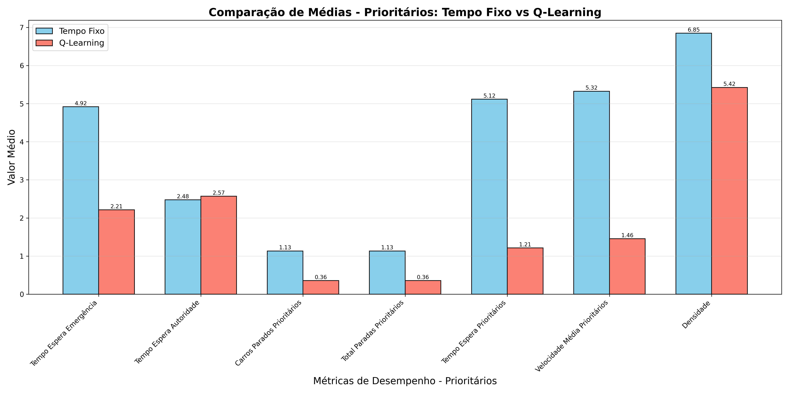

Relatório Comparativo de Veículos Prioritários: Tempo Fixo vs Q-Learning
Este relatório compara o desempenho dos algoritmos Tempo Fixo e Q-Learning especificamente para veículos prioritários (emergência e autoridade).
Métricas para Tempo de Espera - Emergência
| Algoritmo | Média | Desvio Padrão | Máximo | Mínimo |
|---|
| Tempo Fixo | 4.92 | 7.41 | 26.00 | 0.00 |
| Q-Learning | 2.21 | 5.03 | 13.50 | 0.00 |
Métricas para Tempo de Espera - Autoridade
| Algoritmo | Média | Desvio Padrão | Máximo | Mínimo |
|---|
| Tempo Fixo | 2.48 | 6.38 | 26.00 | 0.00 |
| Q-Learning | 2.57 | 6.80 | 18.00 | 0.00 |
Métricas Gerais para Veículos Prioritários
Carros Parados Prioritários
| Algoritmo | Média | Desvio Padrão | Máximo | Mínimo |
|---|
| Tempo Fixo | 1.13 | 1.27 | 7.00 | 0.00 |
| Q-Learning | 0.36 | 0.93 | 3.00 | 0.00 |
Total Paradas Prioritários
| Algoritmo | Média | Desvio Padrão | Máximo | Mínimo |
|---|
| Tempo Fixo | 1.13 | 1.27 | 7.00 | 0.00 |
| Q-Learning | 0.36 | 0.93 | 3.00 | 0.00 |
Tempo Espera Prioritários
| Algoritmo | Média | Desvio Padrão | Máximo | Mínimo |
|---|
| Tempo Fixo | 5.12 | 7.67 | 26.00 | 0.00 |
| Q-Learning | 1.21 | 4.00 | 15.00 | 0.00 |
Velocidade Média Prioritários
| Algoritmo | Média | Desvio Padrão | Máximo | Mínimo |
|---|
| Tempo Fixo | 5.32 | 5.30 | 13.82 | 0.00 |
| Q-Learning | 1.46 | 3.89 | 13.29 | 0.00 |
Comparação de Médias - Prioritários
